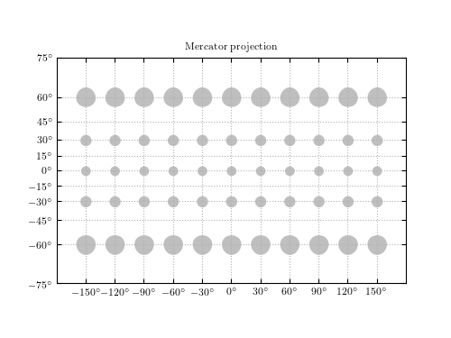

Mercator Projection¶
Figure1.13.
The Mercator projection. Shown are the projections of circles of constant radius 10 degrees across the sky. Note that the area is not preserved by the Mercator projection: the projection increases the size of finite regions on the sphere, with a magnitude which increases at high latitudes. NOTE: This figure in the first edition of the book had an incorrect implementation of the Mercator projection (it was quirectangular, or geographic, projection). The code below is a revised version from the second edition of the book (ZI).
{kind=link}
# Author: Jake VanderPlas (modified by Zeljko Ivezic, see above)
# License: BSD
# The figure produced by this code is published in the textbook
# "Statistics, Data Mining, and Machine Learning in Astronomy" (2013)
# For more information, see http://astroML.github.com
# To report a bug or issue, use the following forum:
# https://groups.google.com/forum/#!forum/astroml-general
import numpy as np
from matplotlib import pyplot as plt
# ----------------------------------------------------------------------
# This function adjusts matplotlib settings for a uniform feel in the textbook.
# Note that with usetex=True, fonts are rendered with LaTeX. This may
# result in an error if LaTeX is not installed on your system. In that case,
# you can set usetex to False.
from astroML.plotting import setup_text_plots
setup_text_plots(fontsize=8, usetex=True)
# ------------------------------------------------------------
def mercator(latitude):
# see https://en.wikipedia.org/wiki/Mercator_projection
return np.log((1 + np.sin(latitude)) / np.cos(latitude))
def plot_small_mercator_tissot_ellipse(longitude, latitude, radius):
"""Plot Tissot Ellipse/Tissot Indicatrix for Mercator projection
Parameters
----------
longitude : float or array_like
longitude of ellipse centers (radians)
latitude : float or array_like
latitude of ellipse centers (radians)
radius : float or array_like
radius of ellipses
"""
phi1 = np.linspace(-np.pi, 0, 360)
phi2 = np.linspace(0, np.pi, 360)
for i in range(0, np.size(longitude)):
long0 = longitude[i]
for j in range(0, np.size(latitude)):
lat0 = latitude[j]
x = long0 + radius / np.cos(lat0) * np.cos(phi1)
y1 = mercator(lat0 + radius * np.sin(phi1))
y2 = mercator(lat0 + radius * np.sin(phi2))
plt.fill_between(x, y1, y2, color='gray', alpha=0.5, linewidth=0)
# plot Mercator projection: we need to set this up manually
def mercator_axes():
ax = plt.axes(aspect=1.0)
ax.xaxis.set_major_formatter(
plt.FuncFormatter(lambda s, a: r'$%i^\circ$'
% np.round(s * 180 / np.pi)))
ax.set_xticks(np.pi / 6 * np.linspace(-5, 5, 11))
yticks = np.pi / 12 * np.linspace(-5, 5, 11)
ax.set_yticks(mercator(yticks))
ax.set_yticklabels([r'$%i^\circ$'%ind for ind in yticks /np.pi*180 ])
ax.set_xlim(-np.pi, np.pi)
ax.set_ylim(-np.pi / 1.55, np.pi / 1.55)
return ax
# ------------------------------------------------------------
# generate a latitude/longitude grid
circ_long = np.linspace(-np.pi, np.pi, 13)[1:-1]
circ_lat = np.linspace(-np.pi / 2, np.pi / 2, 7)[1:-1]
radius = 5 * np.pi / 180.
# plot figure with Tissot ellipses
plt.figure(figsize=(5, 3.75))
ax = mercator_axes()
ax.grid(True)
plot_small_mercator_tissot_ellipse(circ_long, circ_lat, radius)
ax.set_title('Mercator projection')
plt.show()